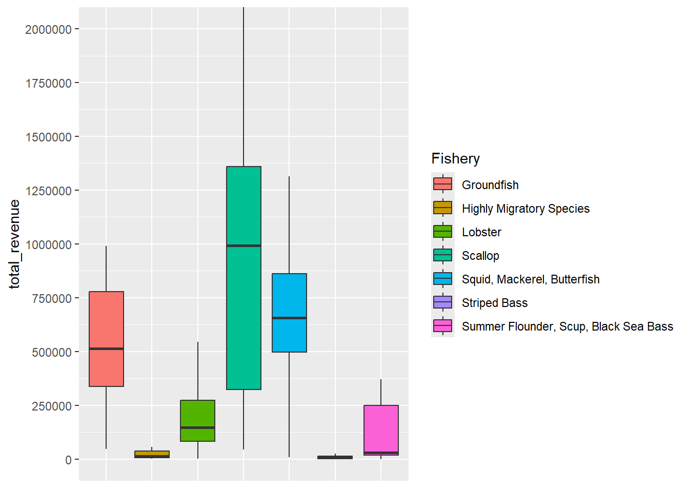
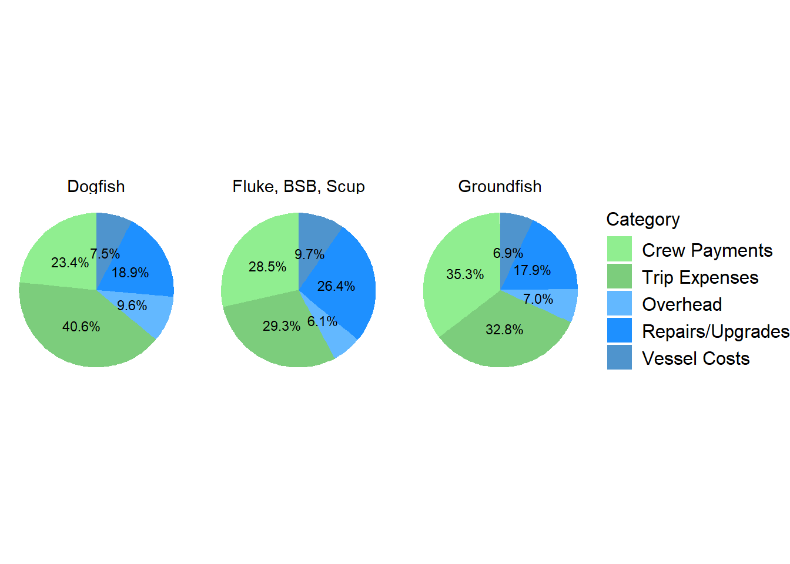
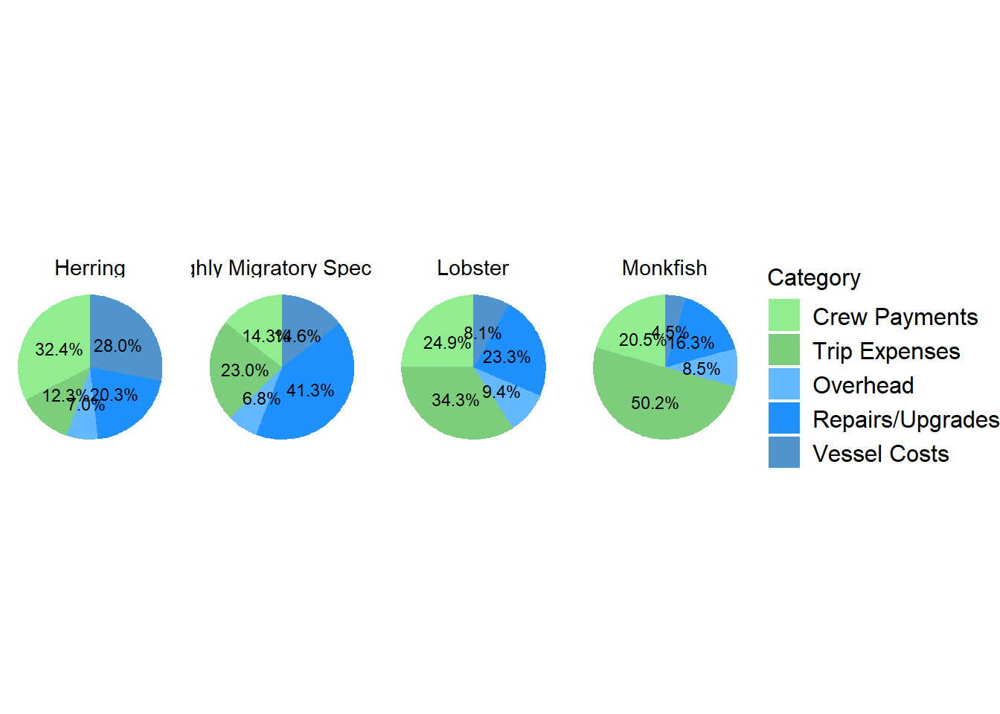

Cost Summary
## Warning: package 'scales' was built under R version 4.3.3
| Dredge_Scallop |
29 |
219 |
13 % |
$ 599,579 |
$ 451,753 |
$ 504,413 |
| Gillnet |
10 |
89 |
11 % |
$ 119,434 |
$ 112,268 |
$ 79,096 |
| Handgear |
59 |
356 |
17 % |
$ 68,241 |
$ 30,327 |
$ 98,525 |
| Longline |
4 |
23 |
17 % |
$ 231,125 |
$ 214,448 |
$ 177,376 |
| Pot/Trap |
160 |
1345 |
12 % |
$ 213,431 |
$ 173,801 |
$ 235,961 |
| Seine |
3 |
19 |
16 % |
$ 637,865 |
$ 436,876 |
$ 562,790 |
| Trawl |
29 |
188 |
15 % |
$ 504,983 |
$ 358,071 |
$ 521,303 |
| Dogfish |
3 |
25 |
12 % |
$ 63,940 |
$ 49,381 |
$ 38,888 |
| Fluke, BSB, Scup |
23 |
136 |
17 % |
$ 149,243 |
$ 85,939 |
$ 165,055 |
| Groundfish |
7 |
52 |
13 % |
$ 597,651 |
$ 555,304 |
$ 535,975 |
| Herring |
4 |
5 |
80 % |
$ 596,946 |
$ 491,938 |
$ 427,299 |
| Highly Migratory Species |
34 |
193 |
18 % |
$ 109,658 |
$ 59,160 |
$ 135,879 |
| Lobster |
152 |
1272 |
12 % |
$ 214,102 |
$ 176,423 |
$ 228,368 |
| Monkfish |
3 |
19 |
16 % |
$ 141,591 |
$ 152,922 |
$ 98,271 |
| Other |
17 |
140 |
12 % |
$ 227,303 |
$ 116,530 |
$ 371,624 |
| Scallop |
28 |
229 |
12 % |
$ 615,621 |
$ 523,855 |
$ 506,079 |
| Squid, Mackerel, Butterfish |
9 |
59 |
15 % |
$ 595,536 |
$ 327,253 |
$ 752,326 |
| Striped Bass |
12 |
66 |
18 % |
$ 20,582 |
$ 15,712 |
$ 17,963 |
| Dredge_Scallop-Scallop |
28 |
216 |
13 % |
$ 615,621 |
$ 523,855 |
$ 506,079 |
| Gillnet-Monkfish |
3 |
19 |
16 % |
$ 141,591 |
$ 152,922 |
$ 98,271 |
| Gillnet-Other |
7 |
70 |
10 % |
$ 109,937 |
$ 108,006 |
$ 76,253 |
| Handgear-Fluke, BSB, Scup |
8 |
56 |
14 % |
$ 38,340 |
$ 25,672 |
$ 38,920 |
| Handgear-Highly Migratory Species |
31 |
181 |
17 % |
$ 91,558 |
$ 40,733 |
$ 122,662 |
| Handgear-Other |
10 |
63 |
16 % |
$ 71,469 |
$ 46,960 |
$ 73,601 |
| Handgear-Striped Bass |
10 |
56 |
18 % |
$ 16,649 |
$ 13,530 |
$ 13,145 |
| Longline-Highly Migratory Species |
3 |
8 |
38 % |
$ 296,689 |
$ 247,766 |
$ 146,292 |
| Pot/Trap-Fluke, BSB, Scup |
6 |
23 |
26 % |
$ 79,618 |
$ 86,039 |
$ 59,836 |
| Pot/Trap-Lobster |
150 |
1265 |
12 % |
$ 214,970 |
$ 176,423 |
$ 229,739 |
| Pot/Trap-Other |
4 |
57 |
7 % |
$ 356,436 |
$ 146,950 |
$ 510,244 |
| Trawl-Fluke, BSB, Scup |
9 |
57 |
16 % |
$ 294,239 |
$ 321,032 |
$ 178,237 |
| Trawl-Groundfish |
5 |
41 |
12 % |
$ 778,262 |
$ 595,534 |
$ 533,279 |
| Trawl-Other |
7 |
38 |
18 % |
$ 393,869 |
$ 195,462 |
$ 408,119 |
| Trawl-Squid, Mackerel, Butterfish |
8 |
52 |
15 % |
$ 668,494 |
$ 490,242 |
$ 769,481 |

| Longline |
4 % |
| Gillnet |
1.9 % |
| Dredge_Scallop |
1.1 % |
| Handgear |
0.1 % |
| Pot/Trap |
-1 % |
| Seine |
-3.2 % |
| Trawl |
-8.6 % |

| Groundfish |
3.9 % |
| Scallop |
1.1 % |
| Highly Migratory Species |
1.1 % |
| Herring |
0.1 % |
| Dogfish |
0 % |
| Monkfish |
0 % |
| Striped Bass |
0 % |
| Lobster |
-0.9 % |
| Other |
-1.6 % |
| Fluke, BSB, Scup |
-1.9 % |
| Squid, Mackerel, Butterfish |
-25.8 % |
| Longline-Highly Migratory Species |
4.2 % |
| Trawl-Groundfish |
3.5 % |
| Gillnet-Other |
3 % |
| Dredge_Scallop-Scallop |
1.1 % |
| Handgear-Other |
0.2 % |
| Handgear-Fluke, BSB, Scup |
0.1 % |
| Handgear-Highly Migratory Species |
0.1 % |
| Gillnet-Monkfish |
0 % |
| Handgear-Striped Bass |
0 % |
| Pot/Trap-Other |
0 % |
| Trawl-Other |
-0.3 % |
| Trawl-Fluke, BSB, Scup |
-0.3 % |
| Pot/Trap-Lobster |
-0.9 % |
| Pot/Trap-Fluke, BSB, Scup |
-11.7 % |
| Trawl-Squid, Mackerel, Butterfish |
-25.9 % |
By primary gear, magnitude of mean costs from highest to lowest follows a similar order as with revenue- seine, scallop dredge, trawl, longline, pot/trap, gillnet, handgear. The highest cost gear types are generally more crew-intensive with crew expenses accounting for over 40% of total costs among scallop dredge, seine, and trawl vessels. Gillnet and pot/trap vessels have the highest share of trip expenses. For pot/trap vessels, high trip expenses can be explained in part by the cost of bait. For handgear vessels, the lowest cost gear group, repairs/upgrades are the largest share of costs. Overhead costs as a share of total costs are similar across primary gear groups, ranging from 6-10% for most gear groups. Quota net costs are not included in the figures as they represent a relatively small portion of total costs; the highest share was 4% for the longline group. Some gear groups have negative quota net costs, in which leasing revenue exceeds costs. However, for some individual vessels, quota leasing may represent a substantial cost.
By FMP, a number of fisheries have similar mean costs. Scallop vessels have the highest mean costs, though groundfish, herring, and squid, mackerel, butterfish all have mean values only slightly lower than scallop vessels. The groundfish, scallop and squid, mackerel, butterfish fisheries are the most crew-intensive, with crew payments exceeding 40% of total costs for each. The lobster fishery has relatively higher trip expenses than most other FMPs, with 31% of total costs in this category. Quota net costs are not included in the figures as they represent a relatively small portion of total costs; the highest share was 4% for groundfish. Some FMP groups have negative quota net costs, in which leasing revenue exceeds costs. However, for some individual vessels, quota leasing may represent a substantial cost.
When primary gear and FMP are combined, trawl-groundfish has the highest mean and median costs. Within primary gear types, a considerable difference in costs is found across fisheries. For example, mean and median values for lobster pot/trap vessels are greater than those values for fluke, black sea bass, and scup pot/trap vessels. The top cost contributors are generally similar within a gear group and across fisheries. For example, all trawl fisheries have relatively high crew payments, ~40% of total costs. Handgear fisheries have relatively large shares of repair/maintenance/upgrade/improvement (RMUI) costs. Pot/trap fisheries have relatively high trip expenses, possibly due to the cost of bait. Quota net costs are not included in the figures as they represent a relatively small portion of total costs; the highest share was 4% for Longline-HMS and Trawl- groundfish. Some gear/FMP groups have negative quota net costs, in which leasing revenue exceeds costs. However, for some individual vessels, quota leasing may represent a substantial cost.